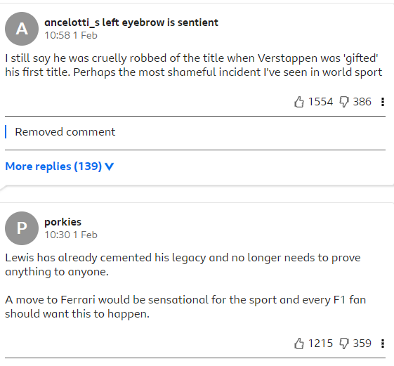
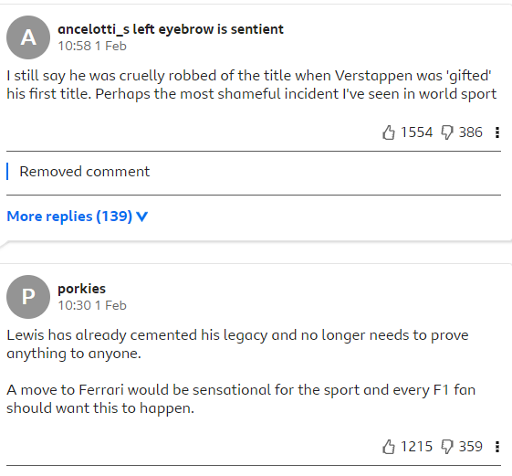

Lewis Hamilton will leave Mercedes and join Ferrari for the 2025 Formula 1 season. Hamilton's current contract with Mercedes was due to expire at the end of 2025 but he will depart the team after this season and replace Carlos Sainz at Ferrari.
“I have had an amazing 11 years with this team and I'm so proud of what we have achieved together,"Hamilton said. "Mercedes has been part of my life since I was 13 years old. It's a place where I have grown up, so making the decision to leave was one of the hardest decisions I have ever had to make. But the time is right for me to take this step and I'm excited to be taking on a new challenge. "I will be forever grateful for the incredible support of my Mercedes family, especially Toto for his friendship and leadership and I want to finish on a high together. I am 100% committed to delivering the best performance I can this season and making my last year with the Silver Arrows, one to remember.” Mercedes CEO and team principal Toto Wolff paid tribute to the departing Hamilton.